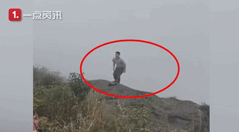
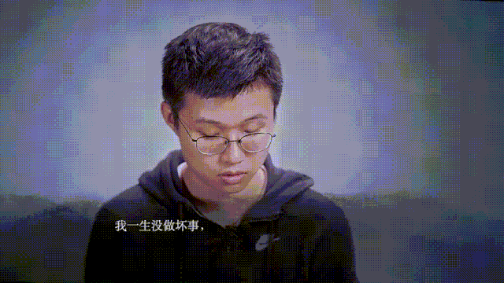

首 页
首 页 量 表
量 表 培 训
培 训 资 讯
资 讯 视 频
视 频 关 于 我 们
关 于 我 们
资讯> 乔任梁去世三年后，22岁女孩深夜失联
乔任梁去世三年后，22岁女孩深夜失联
乔任梁去世三年后，22岁女孩深夜失联：你以为的矫情，要了20万人的命！
创意社
前两天，在网上看到了一条让人揪心的消息：一名22岁的女孩，在前往广西北海涠洲岛散心的过程中失联
据女孩的舅舅说，女孩在教育机构当老师，因工作压力大，有一点抑郁。失联前，女孩曾给朋友开玩笑说要去“跳海”。至今，女孩已失联十余日，救援队还在搜寻。有人说，她在失联之前已经发出了求救，只是被人当成了玩笑。也许，在很多人眼里，那些说着“跳海”、“不想活了”之类的人，都只是随便说说而已，很少有人会把它当真，甚至还有人认为那是矫情。其实，他们并不是矫情，他们只是得了一种叫做抑郁症的病而已。就像是心灵的感冒，和身体的感冒一样，每个人都会遇到它。可遗憾地是，很多人都没有认真地了解过它。
01
还记得去年那个在峨眉山跳崖的21岁女孩吗？因为自己得了抑郁症，不但要承受病痛带来的折磨，还要被人说是脆弱，想不开。最终，在尝试了各种方法自救，但均没有明显的效果之后，女孩选择了以这种方式，决绝地离开了这个世界。
而更早之前的90后姑娘“走饭”，同样是因为抑郁症，再和折磨她的“魔鬼”抗争了两年之后，选择结束了自己年轻的生命。时至今日，仍旧有无数被抑郁困扰的人，把走饭的微博留言区当成了一个树洞，每天在这里诉说着自己的孤独、脆弱和无助。
有人因转学无望，而觉得生活万分痛苦；
有人因失恋分手，而对生活心灰意冷；
也有人因父母的不理解，而觉得生活不再有任何光亮。
在这里，因抑郁带来的迷茫和焦虑，每天都在继续。七年间，走饭的最后一条微博留言，已经达到了100多万。
有数据显示，全球罹患抑郁症的人超过3亿，约占全球人口的4.3%。也就是说，每25个人当中，就有1个是抑郁症患者。由于没有意识到自己患病并及时就医，因抑郁症导致的自杀率一直居高不下。在我国，每年大约有28.7万人死于自杀，其中，因抑郁症而自杀的有近20万人。抑郁如猛兽，惶惶不可终。从2003年的张国荣到2016年的乔任梁，从2012年的走饭到去年的峨眉山女孩，抑郁症造成的悲剧，还在无数的人身上上演。
02
其实，抑郁症原本并没有这么可怕，也并不是所有的抑郁症患者都会选择自杀。除了病痛带来的折磨，别人的不理解和嘲笑，往往才是压死骆驼的最后一根稻草。前段时间，曾在网上看过这样一段视频：视频中，节目组邀请来了几位嘉宾，在他们并不知情的情况下，让他们现场朗读事先准备好的抑郁症患者的微博。
在看到卡片的那一刻，所有人都笑了。
在他们眼里，这些话矫情、幼稚……
写这些话的人太过年轻，没有经历过生活。
面对他们的困惑，有人可以迅速联想到自身经历进行调侃。
有人也可以风轻云淡地否定一段感情。
甚至有人认为这些“空虚”“矫情”的话都是一些单身狗写的。
但当他们读到最后，知道真相的时候，脸上的笑容渐渐变得僵硬，开始慢慢消失，眼神中满是惊愕。
有人眼眶微红，有人哽咽不语……

更可怕的是，我们身边的大多数人都会这样认为。就像最近的热播剧中，罹患抑郁症的杨步凡，不仅在班级里被同学嘲笑：“什么抑郁症啊，就是矫情呗，叽叽歪歪，真当自己是文艺青年了”

回到家还要被父亲指责：“小小年纪哪有什么抑郁？就是找借口偷懒！只要你成绩够好，就没有什么想不开的事儿。”
在我们生活中，大家对抑郁症了解的真的很少，很少……也许很多人都知道，氟西汀(Flouxetine)是抗抑郁症的药，并且它还有一个浪漫的解释：“你是我的命，没你我会疯”。但很少人知道，氟西汀的副作用是：头疼、焦虑、失眠和烦躁。除此之外，关于抑郁症的信息，还有很多人都不知道，以至于在知乎上搜索“抑郁症的表现有什么？”时，点赞最高的才会是一条抑郁症患者的戳心自述：“没人觉得我病了，他们只是觉得我想太多了。”也正是因为这样，才让抑郁症的自杀率越来越高。
03
史铁生曾在《务虚笔记》里说过：“一个真正想死的人，不会再计较人们说什么。一个拿死说来说去的人，以我的经验来看，并不是真的想死，而是...”“而是什么？”“而是还在...还在渴望爱。”对那些患有抑郁症的人来说，如果身边的人能多表达一些对他们的关心和理解，也许，真的就能拯救一条生命。就像中岛美嘉的那首《我也曾想过一了百了》的歌曲评论里，有位网友分享的真实经历：在她初一那年，因为抑郁症，她选择割腕结束自己的生命。但割腕之后，她发现痛的心慌，就用另一只手摁着伤口，打车去了医院。在出租车上，她捂着伤口痛哭，后座被染红了一大片。到了医院之后，出租车司机并没有着急去拉下一个客人，而是带着她去包扎，吃饭。在吃饭的时候，出租车司机看着她，突然哭了。她有些茫然：“割腕的是我，疼的也是我，为什么你却哭了？”司机师傅一边哭，一边说：“十来岁的小姑娘，人生路还长。千万别冲动，千万别学我女儿…”司机师傅的细微举动，让这个14 岁的女孩有了一次重生的机会。可他的女儿，却永远活在了过去。人生路漫漫，生死一瞬间。有人一别，就是永远。很多时候，我们一点点善意的关心，一点点耐心的倾听，对他们来说，就是一次重生！另外，对那些心灵感冒的朋友，希望我们都能轻声地对他们说一句：“我看到了你秒删的朋友圈，我也知道你坚强背后的不堪，你觉得现在很黑暗，但星星和月亮总是在黑暗中才能看见，不管多晚，它都一直在陪你！